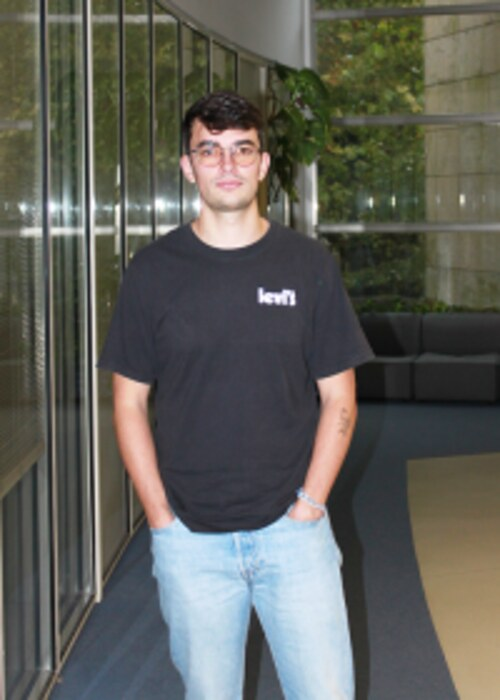

Two institutions, one quantum-HPC roadmap
This tutorial is delivered jointly by researchers from CiTIUS (Universidade de Santiago de Compostela) and CESGA, the Galician Supercomputing Center.
CiTIUS — the Centro Singular de Investigación en Tecnoloxías Intelixentes — is the Universidade de Santiago de Compostela's (USC) research center for intelligent technologies, spanning computer vision, trustworthy AI, high-performance computing, robotics and quantum computing. Founded in 1495, USC is one of the oldest universities in the Spanish-speaking world and CiTIUS's host institution.
Visit CiTIUS
CESGA — the Galician Supercomputing Center — has been at the service of scientific advancement since 1993, as a node of the Spanish Supercomputing Network (RES). Through the Quantum Spain initiative, CESGA operates the 32-qubit Qmio quantum computer and develops CUNQA within its HPC infrastructure.
Visit CESGA
Jorge Vázquez-Pérez
CESGA
Predoctoral researcher at the intersection of HPC and quantum computing, and lead developer of the CUNQA emulator. Experienced in leading technical workshops on advanced computing architectures.
F. Javier Cardama
CiTIUS · USC
Postdoctoral researcher specializing in distributed quantum computing and heterogeneous architectures. Creator and lead author of NetQMPI, translating the classical MPI paradigm into the quantum realm.
Tomás F. Pena
CiTIUS · USC
Full Professor at USC and senior CiTIUS researcher with decades of experience in HPC, parallel programming and computer architecture, and director of numerous national and European research projects.